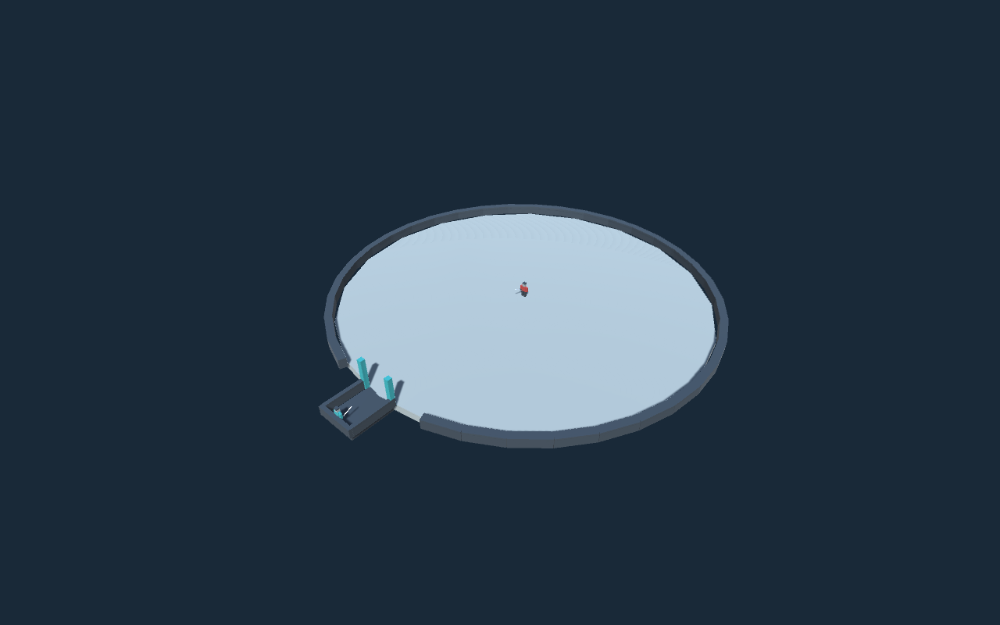

구현 시작 · 기반 프로토타입
Unity 6000.3.25f1 프로젝트와 테스트 씬 생성 완료. WASD 이동, 자유 시점·휠 락온, 입구 트리거, 로우폴리 캐릭터를 작성했습니다. 적은 아직 정지 상태이며 전투·스탯·기술은 미구현입니다.

컴파일·씬 생성 성공. Play Mode 검증은 Unity 검색 인덱스 예외로 실패했으며 직접 조작 확인은 남아 있습니다.
전투 선택 연결 · 임시 연출
2026-10-07: 3m 안 좌클릭 → 포커스 0.25초 → 실제 시간 타이머 선택 → 판정·교환 → 분리. 8방향 글자·성공률·반복 색·불가 표시, 가운데 비도 원, 예약 슬롯, 결과 기록을 IMGUI로 표시합니다. 배치 검증 통과, Play 모드 직접 조작은 미확인. 적 AI·패링·특수기 2·대쉬는 미구현입니다.
스탯 5종 규칙 · 시험 수치
2026-10-07 6차 답변 반영. Scripts/Battle/에 순수 규칙 계층을 구현했고, 배치 모드 규칙 검사(STAT_RULES_OK)를 통과했습니다. 전투 입력·연출·HUD 연결은 아직 미구현입니다.
| 스탯 | 0 | 1 | 2 | 3 |
|---|---|---|---|---|
| 체력 | HP 60, 정면 -20%, 피해 ×0.8, 실패 시 자신 피해 | HP 80, 실패 시 자신 피해 | HP 100, 정면 +5%, 실패 시 적 피해 | HP 120, 정면 +5%, 우클릭 패링 0.3초 (쿨 8초) |
| 속도 | 이동 4, 후면 -10%, 전체 -10%, 대쉬 2.5초 | 4.5, 후면 -5%, 대쉬 1.8초 | 5, 대쉬 1.2초 | 5.5, 후면 +10%, 대쉬 0.6초 |
| 기력 | 스킬 쿨 ×1.8 | ×1.3 | ×1.0 | ×0.5 + 비도(첫 100%, 이후 실패 30% 이상) |
| 힘 | 피해 ×0.4, 특수기 ×0.6 | ×0.8 / ×0.85 | ×1.0 / ×1.0 | ×1.2 +2, 치명타 15% ×1.5 |
| 특수기 | 대쉬 무적 없음 | 회피 무적 0.3초 | + 지나가며 베기 ×2.5 (쿨 10초) | + 같은 방향 3연속 마무리 ×4 (쿨 20초) |
같은 방향 누적 색: 1회 노랑 · 2회 파랑 · 3회 빨강(특수기 3 + 쿨 준비 시만, 아니면 불가). 좌우 묶음 막힘: 다음 콤보 +10%, 같은 쪽 연속 성공 시 누적, 상한 30%.
검을 고르는 순간,
전투의 흐름이 달라진다.
3D 실시간 전투 + 짧은 콤보 사전 예약. 사용자 검토용 구현 설계입니다.
기반 코드·모델 작성 현황은 상단을 참고하세요. 아래 설계에는 아직 미구현 내용도 포함됩니다. 그림은 실제 플레이 화면이 아닙니다.
사용자가 명시한 게임 규칙. 구현의 기준입니다.
그 규칙을 구현하기 위한 구조와 처리 방식입니다.
해당 기능 제작 전에 구체적인 안으로 확인합니다.
01 · 짧게 선택하고, 연속으로 펼친다
확정카메라가 플레이어와 검을 포커스하면 방향과 성공률을 보고 클릭으로 예약합니다. 속도 2·3은 공격 방향을 먼저 모두 정하고 연출합니다. 선택 중 일반 피격은 없고, 추첨 과정은 표시하지 않습니다.
| 속도 | 최대 타수 | 전체 선택 시간 | 시간 초과 |
|---|---|---|---|
| 0 | 1 · 성공률 감소 | 1초 | 취소 + 적에게 피격 |
| 1 | 1 | 1.3초 | 취소 + 적에게 피격 |
| 2 | 2 | 1.5초 | 미선택 공격 취소 |
| 3 | 3 | 2초 | 2타 예약했으면 2타 실행 → 분리 |
같은 방향 최대 2연속. 반복한 두 번째 타격만 추가 피해 + 추가 실패 확률을 받습니다. 첫 타는 기본 판정입니다. 수치는 미정입니다.
02 · 전투 상태 전환도
내부 상태 분리 제안부분 예약 예외가 있으므로 “예약 완료”만 연출 진입 조건으로 삼지 않습니다. 사망·재시작·씬 종료에서도 시간과 카메라를 반드시 복구하는 설계입니다.
03 · 공격 선택 화면 초안
배치 제안 · 비작동 와이어프레임성공률 —%
성공률 —%
성공률 —%
성공률 —%
검 포커스
성공률 —%
성공률 —%
성공률 —%
성공률 —%
속도 3 · 전체 선택 2초
마우스로 방향 선택 → 클릭으로 예약.
세 번째도 같은 방향이면 다른 방향 선택 필요.
1타: 기본 피해·기본 확률
2타: 추가 피해·실패 확률 증가
시간 종료: 1·2타 실행 후 분리
임의 성공률 수치는 넣지 않았습니다. 방향 좌표 기준·예약 취소·타이머 시작 시점은 미정입니다.
04 · 규칙과 연출을 분리하는 코드 구조
클래스 구조 제안HUD는 계산 결과를 표시하고, 연출은 판정 결과를 재생합니다. 모델을 바꿔도 예약·확률 규칙을 다시 작성하지 않도록 경계를 둡니다. 화살표는 주요 정보 전달만 표시합니다.
예약 데이터
방향 목록 · 속도 · 종료 사유
선택 중에는 피해를 주지 않음
판정 결과
타격 ID · 성공/방어 · 피해
추첨은 내부 처리
연출 이벤트
타격 시점 · 반응 · 분리
같은 타격 피해 중복 방지
05 · 맵과 적
배치·행동 종류 확정거리 비율은 설명용입니다. 실제 크기는 승인된 이동속도에 맞춥니다. 적이 다가오는 실제 조우 시간은 별개입니다.
근·중·원거리
큰 검 휘두르기
투척
도약 광역 내려찍기
추가 대응
돌진하며 휘두르기
원거리 공격하며 후퇴
두 행동 모두 보유
미정
거리 경계 · 예고 · 후딜
행동 우선순위
파괴 범위와 잔해
06 · 로우폴리와 연출 제작
제작 순서 제안단순 관절형 캐릭터와 검으로 시작해 이동·단타·막힘·분리를 먼저 확인합니다. 이후 방향 연결과 성공/실패 각 약 5개 변형을 추가합니다. 시작 검 자세, 베기 궤적, 적 반응을 조합하는 구조를 제안합니다.
게임 루트
위치·체력·스탯·전투 규칙
시각 연결부
모션 요청·검 부착점·타격 시점
교체 가능한 모델
초기 로우폴리 → 사용자 에셋
모델이나 리그가 달라지면 시각 연결은 다시 검증합니다. 자동으로 모든 에셋과 호환된다는 의미는 아닙니다.
07 · 구현 순서와 완료 기준
진행 계획 · 모두 미착수| 단계 | 작업 | 완료 확인 |
|---|---|---|
| P1 기반 | 환경·맵·이동·카메라·모형 | 컴파일, 자유 시점/락온, 보행 배치 |
| P2 선택 | 입구·허공 베기·8방향 예약 | 타수·시간·반복 제한·피격 보호 |
| P3 교환 | 평가·판정·공격·반응·분리 | 부분 예약 실행, 둘째 타 보정 |
| P4 적 전투 | 적 5개 패턴·회피·점프 | 거리별 패턴, 예고와 피해 범위 |
| P5 확장 | 특수기·파괴·연출 변형 | 해금 조건, 파괴 후 진행 |
| P6 완결 | 스탯 화면·승패·재시작 | 시작부터 종료까지 반복 플레이 |
스탯 데이터는 P2부터 사용합니다. 각 단계에 필요한 미정값을 먼저 확인하고, 구현·컴파일·플레이 검증을 구분해 기록합니다.
08 · 만들기 전에 확인할 부분
지금 전부 답할 필요 없음선택 단계
타이머 시작 시점과 실제 시간 기준, 입력 방향 좌표, 예약 취소, 속도 2의 부분 예약 및 예약 0개 처리. 제안: 예약분 실행, 0개면 공격 없이 복귀.
판정·스탯
기본 확률·피해 수식, 반복 보정량, 후방·검 자세 효과, 각 스탯 수치와 0의 제약, 정확히 10포인트 소진 여부.
액션과 적
연출 중 조작·피해, 사망 중단, 검 끝자세 이월, 거리 수치·예고·쿨다운, 특수기 효과, 파괴 범위.
기술 제안
입력 가능한 시점에 타이머 시작, 실제 시간 사용, 확정된 계획을 내부 판정 후 연출, 고유 타격 ID로 중복 피해 방지. 아직 게임 구현은 없습니다.